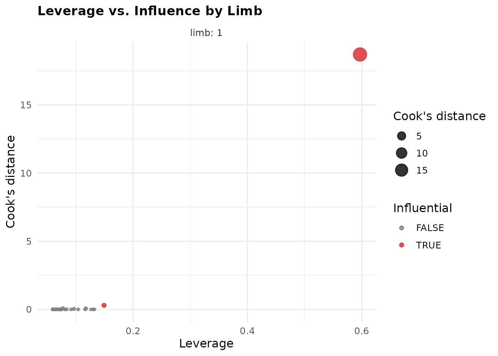
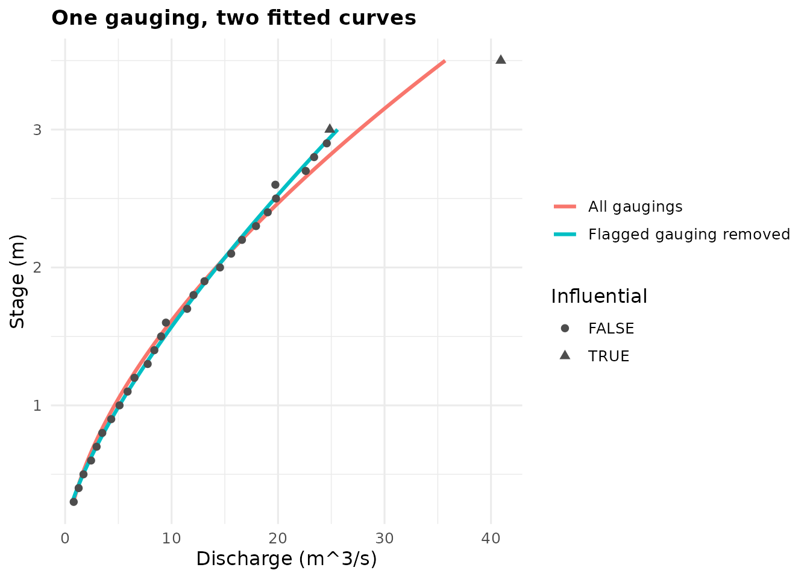

Leverage and Influence: Which Gaugings Are Steering Your Fit
Jonathan Payne, Environment Agency Flood Forecasting
September 2026
Source:vignettes/leverage_influence_guide.Rmd
leverage_influence_guide.RmdHere’s a question plot_rating_residuals() can’t answer:
if one particular gauging had never been taken – lost in the field, a
bad day, whatever – would your fitted C, a,
and n look basically the same, or would they land somewhere
noticeably different? A gauging can sit right on its own limb’s curve,
with a small, unremarkable residual, and still be the reason
the curve is where it is. This vignette is about spotting that gauging
before it surprises you, using flag_influential_gaugings()
and plot_rating_leverage() – and about explaining, in plain
language, what the numbers those functions produce actually mean.
Two questions that sound similar but aren’t
-
“Does this gauging fit well?” – a residual
question.
plot_rating_residuals()answers it: observed minus fitted discharge, for every gauging. A point right on the curve has a small residual. - “Did this gauging decide where the curve goes?” – an influence question. A gauging can have a tiny residual precisely because the fit bent itself to reach it, especially if that gauging sits alone at one end of a limb with nothing nearby to hold the curve in place. That’s what this vignette covers.
Think of fitting a curve like balancing a plank across a few scattered weights. A weight near the middle, surrounded by others, barely moves the plank if you nudge it – there’s support all around. A single weight way out at one end, with nothing else nearby, can tip the whole plank on its own. Whether that weight looks “wrong” once the plank has settled (its residual) is a completely different question from how much leverage it had to begin with.
A worked example
Twenty-six ordinary gaugings across a range, plus one that sits alone at the sparse top end and reads about 25% higher than the smooth curve running through everything else would predict – not an absurd value, just an isolated one, at the one place nothing else backs it up.
set.seed(1)
stage_m <- seq(0.3, 3, by = 0.1)
discharge_cms <- 5 * stage_m^1.5 * exp(rnorm(length(stage_m), sd = 0.03))
# one isolated, high gauging at the sparse top end
stage_m <- c(stage_m, 3.5)
discharge_cms <- c(discharge_cms, 5 * 3.5^1.5 * 1.25)
fit <- rate_optimise(discharge_cms, stage_m, n_bounds = c(1.3, 1.7))
fit@limbs[, .(C, a, n, rmse_cms, r_squared)]
#> C a n rmse_cms r_squared
#> <num> <num> <num> <num> <num>
#> 1: 4.086972 -0.07832364 1.7 1.266437 0.9810271r_squared looks fine, and
vignette("rating_curves_guide")’s usual residual check
wouldn’t obviously single this gauging out either. Ask the influence
question instead:
flagged <- flag_influential_gaugings(fit)
flagged@gaugings[order(-cooks_distance)][1:5, .(stage_m, discharge_cms, residual_cms, leverage, cooks_distance, influential)]
#> stage_m discharge_cms residual_cms leverage cooks_distance influential
#> <num> <num> <num> <num> <num> <lgcl>
#> 1: 3.5 40.92438 5.225298 0.59697824 18.69865405 TRUE
#> 2: 3.0 24.85935 -2.780520 0.14927731 0.29713691 TRUE
#> 3: 2.6 19.74745 -2.068232 0.07708563 0.07213330 FALSE
#> 4: 2.9 24.57747 -1.553401 0.11753465 0.06786164 FALSE
#> 5: 2.8 23.38707 -1.269864 0.09667213 0.03559688 FALSEThe top row is exactly the gauging planted above – flagged
influential, with a Cook’s distance an order of magnitude
past everything else in the table. plot_rating_leverage()
shows the same thing across every limb at once, leverage against Cook’s
distance, flagged points picked out in red:
plot_rating_leverage(fit)
What “leverage” and “Cook’s distance” actually mean
Leverage is about position only – how alone a gauging is, not whether its value looks right. A gauging in the crowded middle of a limb has low leverage: there are others nearby, so no single point can swing the curve far. A gauging isolated at the sparse end of a limb has high leverage just by being out there, regardless of what discharge it recorded.
Cook’s distance combines that with the residual: leverage tells you a gauging could swing the fit; Cook’s distance estimates how much it actually did, given both its position and how far its value sits from what the rest of the data implies. A high-leverage gauging that happens to land right where the curve would have gone anyway scores a low Cook’s distance – no harm done. It’s the combination of alone and off that matters, not either on its own.
Concretely, the plot above and the table before it show this gauging with leverage around 0.6-0.7 (out of a maximum of 1) against everything else sitting under 0.15 – it is, numerically, in a class of its own before its value is even considered.
Seeing it directly: refit without the flagged gauging
The most direct way to check what a flagged gauging is doing is the most literal one: take it out, refit, and look at both curves together.
top_idx <- which.max(flagged@gaugings$cooks_distance)
fit_without <- rate_optimise(
discharge_cms[-top_idx], stage_m[-top_idx], n_bounds = c(1.3, 1.7)
)
curve_dt <- function(f, label) {
h <- seq(f@limbs$lower_stage_m, f@limbs$upper_stage_m, length.out = 200)
data.table(stage_m = h, discharge_cms = f@limbs$C * (h - f@limbs$a)^f@limbs$n, fit = label)
}
curves_dt <- rbind(
curve_dt(fit, "All gaugings"),
curve_dt(fit_without, "Flagged gauging removed")
)
ggplot() +
geom_line(data = curves_dt, aes(discharge_cms, stage_m, colour = fit), linewidth = 1.1) +
geom_point(data = flagged@gaugings, aes(discharge_cms, stage_m, shape = influential), size = 2, colour = "grey30") +
labs(
title = "One gauging, two fitted curves",
x = "Discharge (m^3/s)", y = "Stage (m)", colour = NULL, shape = "Influential"
) +
theme_minimal(base_size = 12) +
theme(plot.title = element_text(face = "bold", size = 13))
pct_shift <- 100 * (fit@limbs$C - fit_without@limbs$C) / fit_without@limbs$C
sprintf("C shifts by %.0f%% depending on whether that one gauging is included", pct_shift)
#> [1] "C shifts by -29% depending on whether that one gauging is included"That’s the plain-English payoff: one gauging, on its own, moves the
fitted coefficient by a number worth caring about.
flag_influential_gaugings() found this without anyone
having to refit anything by hand – the whole point of the diagnostic is
knowing this before you’ve committed to a curve, not after a
second gauging campaign disagrees with it.
So a gauging is flagged – now what?
Being flagged is a prompt to look, not a verdict. Three honest possibilities, and only one of them means “consider removing it”:
-
It’s an error. A transcription slip, a misread
staff gauge, a units mix-up. Once found, fix it at the source and refit
– this is the case flagging is most valuable for, since a small data
error can otherwise hide behind a perfectly reasonable-looking
r_squared. -
It’s real, and it’s the only evidence you have out
there. A station’s single highest-flow gauging, taken during
the one flood worth capturing, is supposed to have high
leverage – there’s nothing else out there to share the load with.
Removing it doesn’t make the curve more correct at high flow; it just
removes the only information you had about it. The honest response here
is usually “keep it, and treat that limb’s high end as under-supported”
– exactly what
flag_extrapolated_limbs()already separately checks. - It’s real, but the rest of the limb is oddly thin nearby. Nothing wrong with the gauging itself; the real issue is there’s a gap in gauging coverage that happens to hand this one point too much sway. The fix is more gaugings in that gap, not fewer at the flagged end.
Never drop a flagged gauging reflexively to improve
r_squared – that’s precisely the over-refinement NEMS warns
against (vignette("rating_curves_guide")’s “Guidance:
reading a fit, in order” section already covers this caution in general;
influence is the specific mechanism it’s warning about).
Where this sits among the other diagnostics
| Question | Function |
|---|---|
| How far off is each point, after fitting? | plot_rating_residuals() |
| How much did each point shape the fit, regardless of its residual? |
flag_influential_gaugings(),
plot_rating_leverage()
|
| Does a limb reach far enough beyond its own gaugings? | flag_extrapolated_limbs() |
| How precise are the fitted coefficients overall? |
rate_optimise()’s C_se_asymp/bootstrap
columns |
They answer different questions and are meant to be read together, not as a replacement for one another – a limb can pass every residual check and still be quietly propped up by one gauging.
References
Belsley, D. A., Kuh, E., & Welsch, R. E. (1980). Regression Diagnostics: Identifying Influential Data and Sources of Collinearity. Wiley.
Cook, R. D. (1977). Detection of influential observations in linear regression. Technometrics, 19(1), 15-18.
St. Laurent, R. T., & Cook, R. D. (1992). Leverage and superleverage in nonlinear regression. Journal of the American Statistical Association, 87(420), 985-990.
Where to go next
-
vignette("rating_curves_guide")– “Diagnosing a fit” for the full set of diagnostics this one complements, and “Guidance: reading a fit, in order” for the over-refinement caution referenced above. -
?flag_influential_gaugings,?plot_rating_leverage– full argument reference, including how the defaultinfluentialcutoffs are chosen.